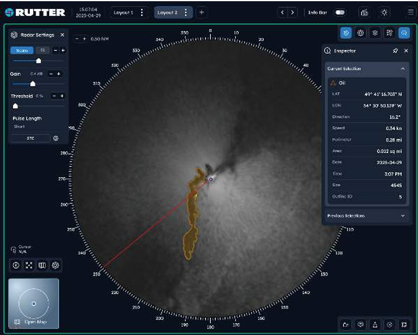
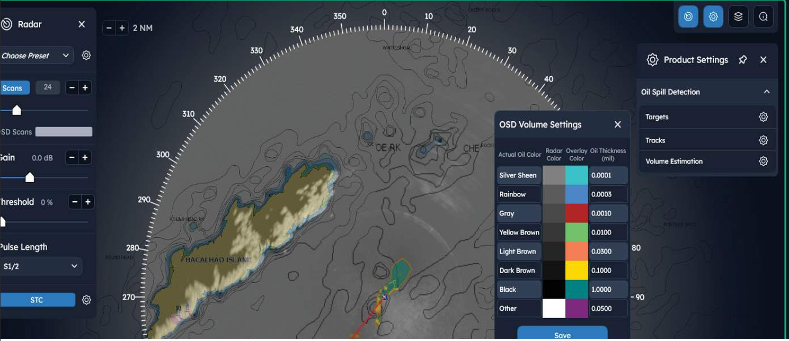

Fast, Automated Detection
Detects oil by monitoring ocean-surface disruptions from sheens and thicker layers, with detection achieved within 10 radar scans under ideal conditions.
Real-time radar-based spill detection and tracking for faster response, lower false alarms, and reduced environmental risk.
Detects oil by monitoring ocean-surface disruptions from sheens and thicker layers, with detection achieved within 10 radar scans under ideal conditions.
Supports auto-tuning using machine learning and manual tuning, plus full automatic detection/outlining or manual outlining workflows.
IEC 60945 certified, motion-compensated, NOFO tested, and built to integrate with existing X-band radar infrastructure.

Detect, track, and outline spills with minimal operator intervention.
Oil Spill Detection connects to existing X-band radars to process data instantly and identify spill location and extent in real time.
It delivers accurate outlining and visible outline history to help teams understand spill movement and improve operational response decisions.
The interface is designed for ease of use, supports English and Portuguese, and integrates with FLIR camera systems for additional situational context.
Use this section for spill detection demonstrations, alert workflows, and response coordination walkthroughs.

| Specification | Description |
|---|---|
| Detection and Tracking | Automatic detection, tracking and outlining (minimum 5L detected during controlled customer trial). |
| Measured Oil Characteristics | Location: spill coordinates. Drift Vector: direction and speed of drift. Perimeter Length: perimeter of outlined spill. Spill Area: outlined surface area. |
| Oil Volume Estimation | Measured spill area combined with user-entered thickness and dampening segmentation to estimate oil volume. |
| Detection Range | Up to 4 nautical miles. |
| FLIR IR Camera Integration | Multi-camera support: up to 4 cameras. Display integration: FLIR in SeaView. Manual control: user-selected FLIR models. Automatic tracking: camera directed to detected spills. |
| Screen Recording | Records operator screens for analysis, playback and training. |
| Raw Data Recording | Records raw radar data for later playback and live-system simulation. |
| Geo-Location | Up to 64 radar scans motion compensated and averaged for enhanced imaging. |
| Navigation Charts | Integrates with Garmin Navionics charts. |
| AIS Integration | AIS Class A and Class B support. |
| Geo-Referenced Notes | Geo-fixed notes viewable locally. |
| Geo-Fixed and Relative Guard Zones | 32 zones with selectable include/exclude behavior for spill detection. |
| Integrated Systems | Runs with all Rutter systems on a single hardware platform: Oil Spill Detection, Small Target Surveillance, WaMoS, Current Monitor, WaveSignal and Ice Navigator. |
| Rutter Unify | Rutter Unify and external data interfaces supported. |
| Shadow Detection | Automatic exclusion of radar shadows from detection areas. |
All sigma S6 modules can be deployed on a shared IEC 60945 Radar Data Processor to simplify hardware footprint and expand capability over time.